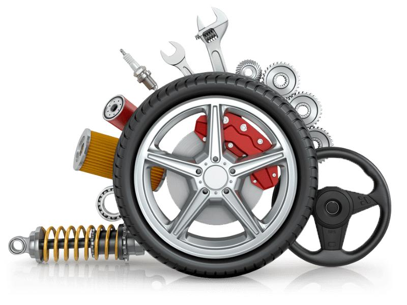

Request a CallBack

At MySyara, we use only the best quality parts and lubricants for Doorstep Car Servicing. Our technicians are highly trained and experienced in all aspects of car maintenance, and they use state-of-the-art tools and equipment to ensure that your car is serviced to the highest standards.
In addition to standard services such as oil changes and tune-ups, we also offer a range of additional services, including brake inspections, transmission services, and much more.